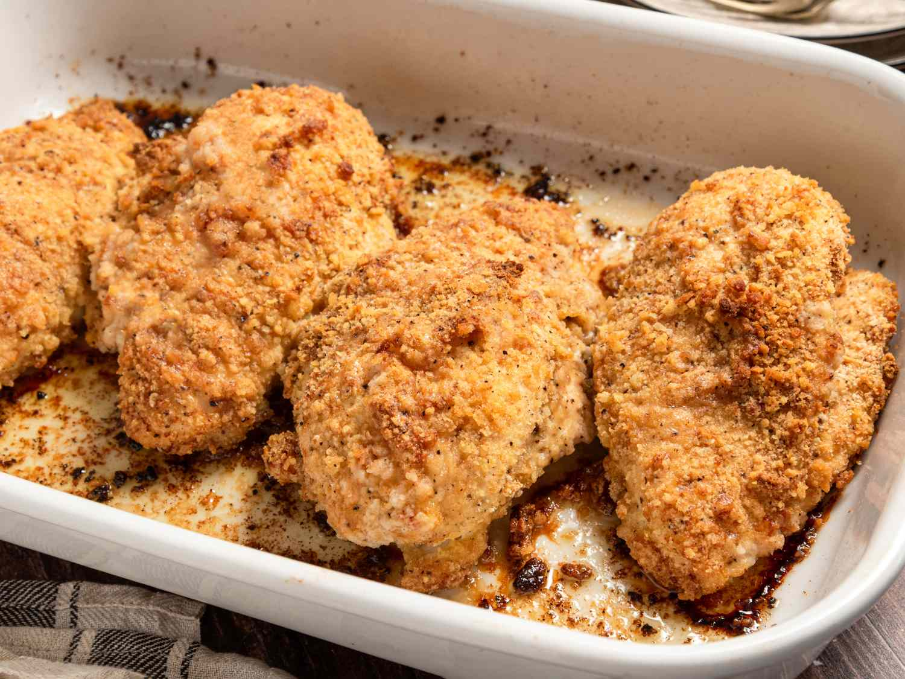

Butter Chicken

Description
Ingredients
- 1 cup crushed buttery round cracker crumbs
- 2 large eggs, beaten
- Garlic salt
- Ground black pepper
- 4 skinless, boneless chicken breast halves
- 1/2 cup butter, cut into pieces
Steps
- Gather all ingredients, Preheat the oven to 190°C.
- Place cracker crumbs and eggs into 2 separat shallow bowls. Mix cracker crumbs with garlic salt and pepper.
- Dip chicken in egg, then dredge in crumb mixture to coat.
- Arrange coated chicken in baking dish. Scatter butter over and around the chicken.
- Bake in the preheated oven until chicken is no longer pink in the center and the juices run clear, about 40 minutes.
- Serve hot and enjoy.
Home